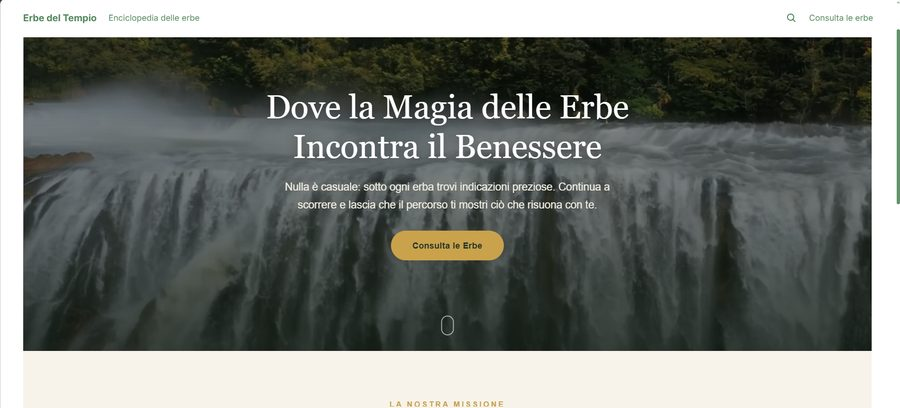
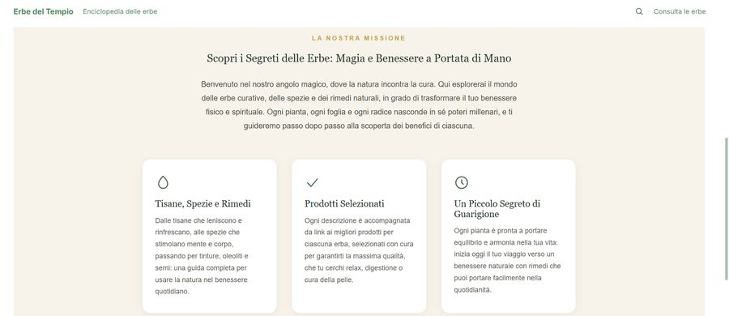
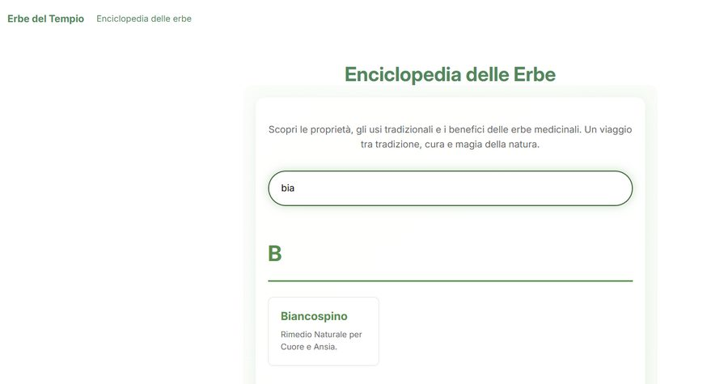
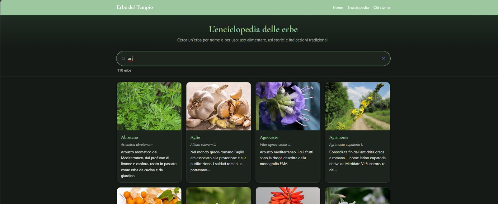
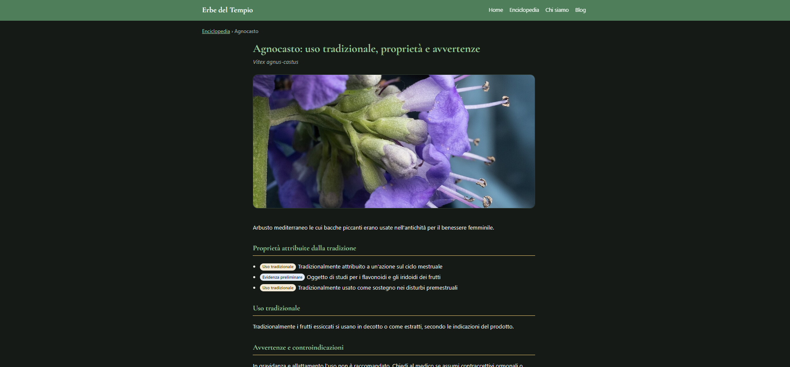
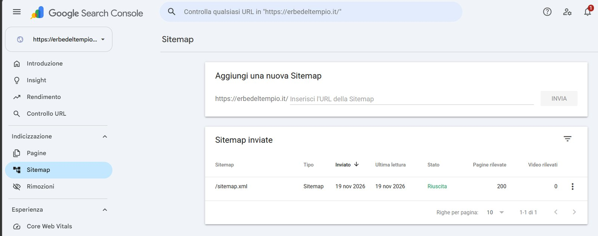

Un progetto personale per costruire da sola tutta la filiera: struttura, codice, SEO e misurazione. Nato su Shopify, è stato poi rifatto direttamente nel codice: oggi costa oltre il 90% in meno.
Non è un lavoro per un cliente. L'ho ideato e costruito io, e lo presento come esempio onesto, anche nelle scelte che ho poi rivisto.
La prima versione era un negozio Shopify, con sezioni hero e mission scritte da zero in HTML e CSS (Liquid personalizzato), senza partire da un tema già pronto. A sostegno del catalogo c'era l'«Enciclopedia delle Erbe», contenuto editoriale pubblicato un po' alla volta. Il modello era l'affiliazione: i link dei prodotti portavano al sito di un partner, dove avveniva l'acquisto.



Nel codice del tema Shopify un link modificato non si salvava. La causa era nel file di configurazione, che è un JSON e contiene l'HTML come testo: le virgolette interne vanno protette con il carattere di escape (\"). Ho trovato l'errore, corretto la sintassi e controllato che il resto del codice seguisse lo stesso criterio.
Shopify è uno strumento valido quando si vuole aggiornare un sito in autonomia, senza toccare il codice: è abbastanza intuitivo, ed è giusto che un servizio così abbia un costo. Per un sito in affiliazione che cambia poco, però, quel costo non era più proporzionato all'uso. Ho quindi ricostruito il sito direttamente nel codice e l'ho pubblicato su GitHub, comprando solo il dominio.
Il compromesso c'è, e lo dico volentieri: servono più strumenti e aggiornare il sito è meno intuitivo che con un CMS. È la stessa logica che seguiamo in Cartaforbicesasso: scegliere lo strumento in base a quello che serve davvero, senza spendere più del necessario.
Il nuovo sito, erbedeltempio.it, è scritto direttamente in HTML, CSS e JavaScript. Ha una home e un'enciclopedia di erbe ricercabili per nome o per uso. Ogni scheda raccoglie proprietà attribuite dalla tradizione, uso tradizionale e avvertenze, con etichette che distinguono l'uso tradizionale dall'evidenza preliminare. Ci sono le pagine Privacy, Cookie e la dichiarazione di affiliazione, oltre al blog.


Al sito ho aggiunto un blog che aggiorno nel tempo, per rispondere alle domande che le persone si fanno prima di cercare una singola erba. Un esempio è «Erbe per dormire meglio: cosa riconoscono le monografie»: valeriana, melissa e luppolo, con ciò che le monografie europee riconoscono e ciò che non possono dire.
Ogni articolo resta prudente: niente dosi né promesse, un'indicazione chiara su quando rivolgersi al medico, un'avvertenza finale e i rimandi alle schede dell'enciclopedia. Così gli articoli e le schede si collegano tra loro e chi legge passa dall'uno alle altre.

Questo progetto mostra due cose. La prima è l'esecuzione: dal codice alla pubblicazione, fino a SEO e misurazione. La seconda è il criterio con cui si sceglie lo strumento: un CMS come Shopify è la scelta giusta quando serve aggiornare in autonomia senza toccare il codice; per un sito che cambia poco, costruirlo nel codice ha ridotto i costi di oltre il 90%. È lo stesso ragionamento che applico ai processi aziendali nel lavoro con Cartaforbicesasso: prima si guarda cosa serve davvero, poi si decide.